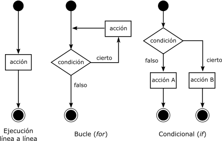

Scripts de bash¶
En esta sección del curso vamos a aprender a hacer algunos scripts básicos que nos permitan automatizar y acelerar el trabajo. Un script no es más que un archivo que contiene un conjunto de órdenes para realizar una acción.
Vamos a crear nuestro primer script. Para ello en un editor de texto escribiremos lo siguente y lo guardaremos con el nombre hola.sh.
#!/bin/bash
# Este es nuestro primer progrma
echo Hola Mundo
A continuación iremos a la terminal y lo ejecutaremos:
~$ ./hola.sh.
La primera línea de nuestro script le indica al sistema que tiene que usar la shell BASH. La segunda línea es un comentario para consumo humano, todas las líneas que comiencen por # son ignoradas por la máquina y nos sirven para incluir comentarios destinados a programadores o usuarios. En la tercera línea tenemos el comando echoque sirve para imprimir texto en la pantalla.
Variables¶
Como cualquier otro lenguaje de programación, necesitamos variables que nos servirán para guardar datos en la memoria del ordenador hasta el momento que los necesitemos. Podemos pensar en una variable como una caja en la que podemos guardar un elemento (e.g, un número, una cadena de texto, la dirección de un archivo…) y, siguiendo con el símil, la memoria del ordenador no sería más que el conjunto de esas cajas.
Para asignar el valor a una variable simplemente simplemente debemos usar el signo =:
nombre_variable=valor_variable
Es importante no dejar espacios ni antes ni después del =.
Para recuperar el valor de dicha variable sólo hay que anteponer el símbolo de dolar $ antes del nombre de la variable:
$nombre_variable
A lo largo de un script podemos asignarle diferentes valores a una misma variable:
#!/bin/bash
to_print='Hola mundo'
echo $to_print
to_print=5.5
echo $to_print
Nombre de las variables¶
Las variables pueden tomar prácticamente cualquier nombre, sin embargo, existen algunas restricciones:
Sólo puede contener caracteres alfanuméricos y guiones bajos
El primer carácter debe ser una letra del alfabeto o “_” (este último caso se suele reservar para casos especiales).
No pueden contener espacios.
Las mayúsculas y las minúsculas importan, “a” es distinto de “A”.
Algunos nombres som usado como variables de entorno y no los debemos utilizar para evitar sobrescribirlas (e.g.,PATH).
De manera general, y para evitar problemas con las variables de entorno que siempre están escritas en mayúscula, deberemos escribir el nombre de las variables en minúscula.
Además, aunque esto no es una regla que deba obedecerse obligatoriamente, es conveniente que demos a las variables nombres que más tarde podamos recordar. Si abrimos un script tres meses después de haberlo escrito y nos encontramos con la expresión “m=3.5” nos será difícil entender que hace el programa. Habría sido mucho más claro nombrar la variable como “media=3.5”.
Control de flujo¶
Como hemos visto los scripts se ejecutan línea a línea hasta llegar al final, sin embargo, muchas veces nos interesará modificar ese comportamiento de manera que el programa pueda responder de un modo u otro dependiendo de las cirscunstancias o pueda repetir trozos de código.
En este curso nos vamos a centrar en los controles de flujo más importantes:
bucles (for loops)
condicionales (if)
Bucles (for)¶
La sintaxis general de los bucles es la siguiente:
for VARIABLE in LISTA_VALORES;
do
COMANDO 1
COMANDO 2
...
COMANDO N
done
Donde la lista de valores puede ser un rango númerico:
for VARIABLE in 1 2 3 4 5 6 7 8 9 10;
for VARIABLE in {1..10};
una serie de valores:
for VARIABLE in file1 file2 file3;
o el resutlado de la ejecución de un comando:
for VARIABLE in $(ls /bin | grep -E 'c.[aeiou]');
Hay que tener en cuenta que si pasamos un listado de valores pero lo ponemos entrecomillado, el ordenador lo enterá como un única línea:
for VARIABLE in "file1 file2 file3";
Un ejemplo simple de for sería:
#!/bin/bash
for numero in {1..20..2};
do
echo Este es el número: $numero
done
Condicionales (if)¶
La sintaxis básica de un condicional es la siguiente
if [[ CONDICIÓN ]];
then
COMANDO 1 si se cumple la condición
fi
También se puede especificar qué hacer si la condición no se cumple:
if [[ CONDICIÓN ]];
then
COMANDO 1 si se cumple la condición
else
COMANDO 2 si no se cumple la condición
fi
Incluso se pueden añadir más condiciones concatenando más if:
if [[ CONDICIÓN 1 ]];
then
COMANDO 1 si se cumple la condición 1
elif [[ CONDICIÓN 2 ]];
then
COMANDO 2 si se cumple la condición 2
else
COMANDO 3 si no se cumple la condición 2
fi
Condicionales con números¶
Al comparar números podemos realizar las siguientes operaciones:
operador |
significado |
|---|---|
-lt |
menor que (<) |
-gt |
mayor que (>) |
-le |
menor o igual que (<=) |
-ge |
mayor o igual que (>=) |
-eq |
igual (==) |
-ne |
no igual (!=) |
#!/bin/bash
num1=$1 # la variable toma el primer valor que le pasamos al script
num2=$2 # la variable toma el segundo valor que le pasamos al script
if [[ $num1 -gt $num2 ]];
then
echo $num1 es mayor que $num2
else
echo $num2 es mayor que $num1
fi
Condicionales con cadenas de texto¶
A la hora de comparar cadenas de texto:
operador |
significado |
|---|---|
= |
igual, las dos cadenas de texto son exactamente idénticas |
!= |
no igual, las cadenas de texto no son exactamente idénticas |
< |
es menor que (en orden alfabético ASCII) |
> |
es mayor que (en orden alfabético ASCII) |
-n |
la cadena no está vacía |
-z |
la cadena está vacía |
#!/bin/bash
string1='reo'
string2='teo'
if [[ $string1 > $string2 ]];
then
echo Eso es verdad
else
echo Eso es mentira
fi
También podemos hacer comparaciones haciendo uso de wildcards:
#!/bin/bash
string1='reo'
if [[ $string1 = *e* ]];
then
echo Eso es verdad
else
echo Eso es mentira
fi
Condicionales con archivos¶
operador |
Devuelve true si |
|---|---|
-e name |
name existe |
-f name |
name es un archivo normal (no es un directorio) |
-s name |
name NO tiene tamaño cero |
-d name |
name es un directorio |
-r name |
name tiene permiso de lectura para el user que corre el script |
-w name |
name tiene permiso de escritura para el user que corre el script |
-x name |
name tiene permiso de ejecución para el user que corre el script |
Por ejemplo, podemos hacer un script que nos informe sobre el contenido de un directorio:
#!/bin/bash
for file in $(ls);
do
if [[ -d $file ]];
then
echo directorio: $file
else
if [[ -x $file ]];
then
echo archivo ejecutable: $file
else
echo archivo no ejecutable: $file
fi
fi
done
Manipulación de cadenas de texto¶
Extraer subcadena¶
Mediante ${cadena:posicion:longitud} podemos extraer una subcadena de otra cadena. Si omitimos :longitud, entonces extraerá todos los caracteres hasta el final de cadena.
Por ejemplo en la cadena string=abcABC123ABCabc:
echo ${string:0}: abcABC123ABCabcecho ${string:0:1}: a (primer caracter)echo ${string:7} :23ABCabcecho ${string:7:3}: 23A (3 caracteres desde posición 7)echo ${string:7:-3}: 23ABCabc (desde posición 7 hasta el final)echo ${string: -4}: Cabc (atención al espacio antes del menos)echo ${string: -4:2}: Ca (atención al espacio antes del menos)
Borrar subcadena¶
Hay diferentes formas de borrar subcadenas de una cadena:
${cadena#subcadena}: borra la coincidencia más corta de subcadena desde el principio de cadena${cadena##subcadena}: borra la coincidencia más larga de subcadena desde el principio de cadena
Por ejemplo, en la cadena string=abcABC123ABCabc:
echo ${string#a*C}: 123ABCabcecho ${string##a*C}: abc
Reemplazar subcadena¶
También existen diferentes formas de reemplazar subcadenas de una cadena:
${cadena/buscar/reemplazar}: Sustituye la primera coincidencia de buscar con reemplazar${cadena//buscar/reemplazar}: Sustituye todas las coincidencias de buscar con reemplazar
Por ejemplo, en la cadena string=abcABC123ABCabc:
echo ${string/abc/xyz}: xyzABC123ABCabc.echo ${string//abc/xyz}: xyzABC123ABCxyz.
Operaciones aritméticas¶
Por último, Bash también permite la operaciones aritméticas con número enteros:
: suma, resta
~$ $num=10
~$ echo $((num + 2))
** : potencia
~$ echo $((num ** 2))
/ % : multiplicación, división, resto (módulo)
~$ echo $((num * 2))
~$ echo $((num / 2))
~$ echo $((num % 2))
VAR++ VAR– : post-incrementa, post-decrementa
~$ echo $((num++))
~$ echo $num
++VAR –VAR : pre-incrementa, pre-decrementa
~$ echo $((++num))
~$ echo $num
Parallel¶
parallel es un programa que permite la ejecución en paralelo de diferentes trabajos siempre que dispongamos de un ordenador o ordenadores con más de un procesador.
Aunque este programa no tiene nada que ver con los scripts de Bash, sí que hacer uso de éstos no resultará muy útil para preparar el archivo de entrada para parallel. Este programa requiere pasarle un archivo donde cada línea es trabajo a realizar y puede consistir tanto en un comando como en un pequeño script a ejecutar. Y es ahí donde saber algo de scripting en Bash nos puede facilitar la tarea. Veamos un ejemplo de input para parallel:
to_run.txt:
zcat file1.fasta.gz | grep '>' | sed 's/>//' | bgzip > sample_names1.txt.gz
zcat file2.fasta.gz | grep '>' | sed 's/>//' | bgzip > sample_names2.txt.gz
zcat file3.fasta.gz | grep '>' | sed 's/>//' | bgzip > sample_names3.txt.gz
zcat file4.fasta.gz | grep '>' | sed 's/>//' | bgzip > sample_names4.txt.gz
zcat file5.fasta.gz | grep '>' | sed 's/>//' | bgzip > sample_names5.txt.gz
zcat file6.fasta.gz | grep '>' | sed 's/>//' | bgzip > sample_names6.txt.gz
parallel no viene instalado por defecto en algunas distribuciones Linux, por tanto, lo primero que debemos hacer es instalarlo:
~$ sudo apt-get install parallel
Con la opción -j podemos especificarle el número de trabajos simultáneos. Así pues, si tenemos 4 procesadores disponibles y queremos correr un trabajo por procesador correríamos:
~$ parallel -j 4 to_run.txt
Ejercicios¶
Haz un script que cree 40 archivos .txt en una carpeta de tu escritorio (usa touch para crearlos)
Haz un script que comprima con gzip sólo los archivos 25 y 29.
Escribe un script que cambie la extensión de los ficheros que contengan un 3 en su nombre de .txt a .md.
Crea un script que copie todos los archivos (no directorios) /etc a una carpeta de tu escritorio.
Prepara un script que cuenta el número de directorios y archivos que hay en /etc
Haz un script que devuelva el número de archivos que has guardado
Supon que tenemos un programa en Python llamado scan_qtl.py que requiere tres parámetros de entrada a, b. Queremos correr todas la combinaciones paramétricas posibles para a de 1 a 10 de 1 en 1 y b = [pop1, pop2, pop3, all]. Prepa el archivo de entrada para usar en parallel. La línea de ejecución del programa sería algo similar a
python scan_qtl.py 1 pop1 > results.txtEn una nueva versión de scan_qtl.py, el programa admite un tercer parámetro c = [1, 10, 100 y 1000]. Prepara el archivo de entrada para usar en parallel con todas las combinaciones paramétricas de a, b y c. La línea de ejecución del programa sería algo similar a
python scan_qtl.py 1 pop1 100 > results.txt

{kind=link}